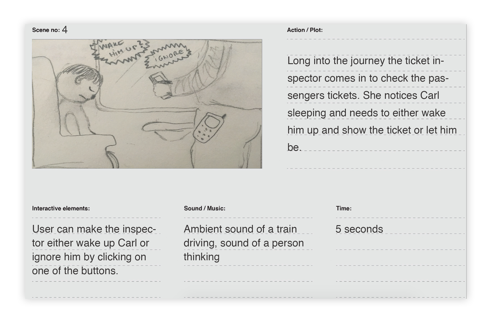
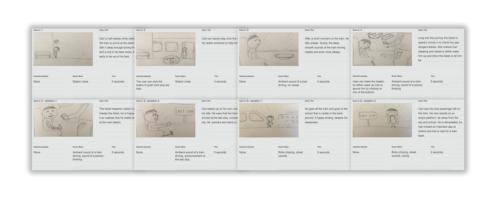
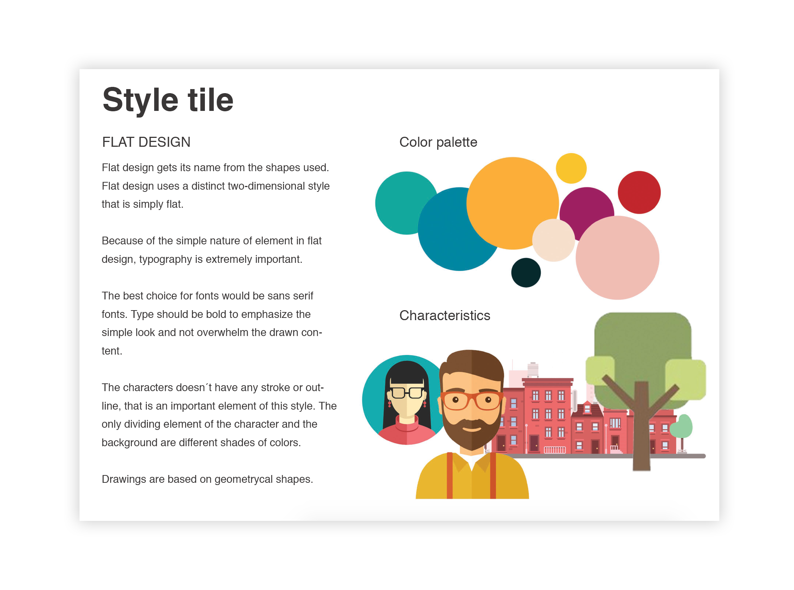
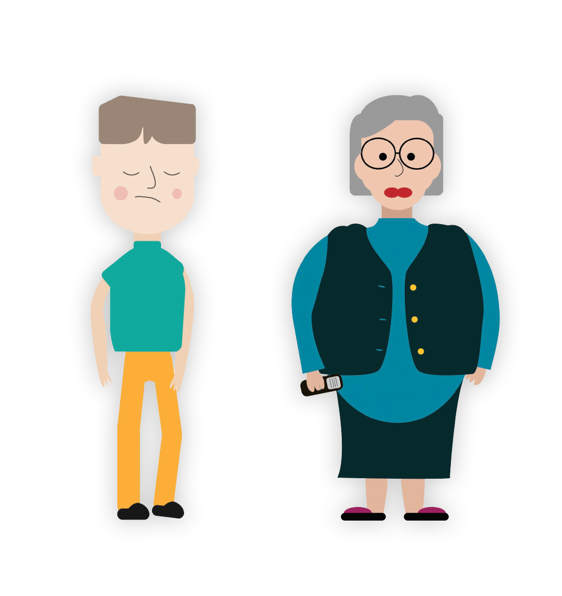
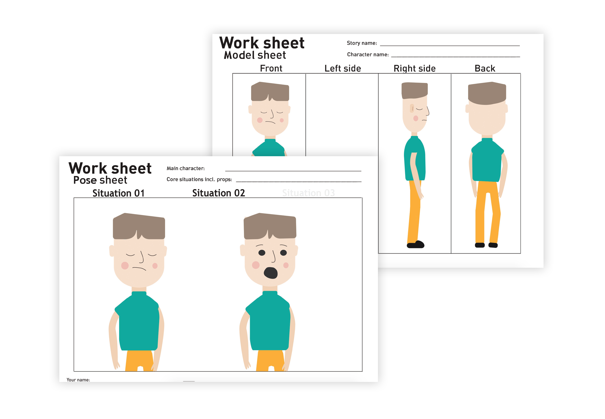
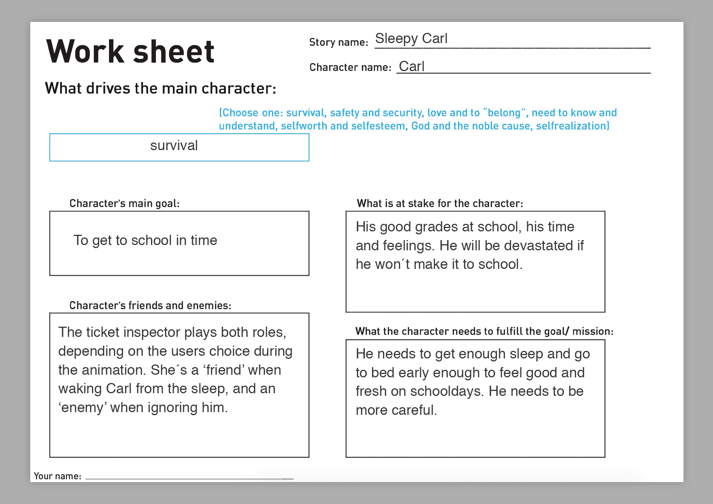

Storytelling
Goal
The goal was to come up with a captivating story for an interactive animation production. I was supposed to learn the basic principles of storytelling and the importance of planning to details while creating a story. Moreover, i was to involve into character design as well as into animating it.
Process
Story / Storyboard
To write the story i had to choose a genre and mood for it. I chose it to be a comedy of everyday life, something that many could relate to. The next step was to plan and come up with a narrative curve which is an essential part of planning the story. In this way the story would have a clear structure, for example, prelude, action, climax, and fadeout.
At last the story could be planned by drawing a detailed storyboard that includes timing, sounds and possible specific interactions. By doing so i learned the importance of thorough planning, leaving spontaneous changes and confusion to the minimum.
Style tile / Worksheet
I had chosen to draw the animation in flat design style. I did a small research on the given style to identify the main characteristics of it and how that could be applied when selecting shapes, fonts and colors during the creative process.
The next step was to create the actual characters of the story and create a worksheet that would show not only their visuals but also give a deeper understanding of their character by making their personality and background description. Moreover it would give a clear idea of the characters goals as well as the circumstances that could keep them from achieving it.
  Sprite sheet animation
A part of the project was learning the basics of drawn animation as well as creation of a sprite sheet animation and implementation of it on a webpage.
I tried to create a simple animation of an emotion/reaction of my character.
Click the image to view the animation.
Result
The task resulted in a short story of a young boy and his daily commute to school by train. In the final production the user would have an opportunity to change the characters destiny by interacting with it and making choices on its behalf.